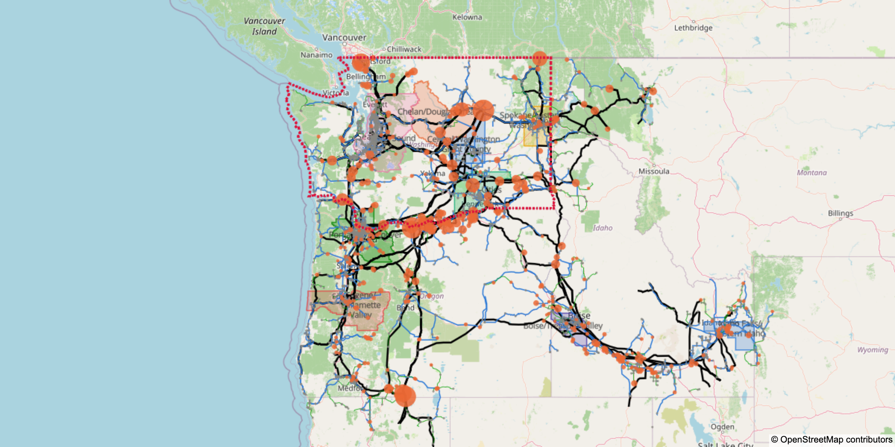
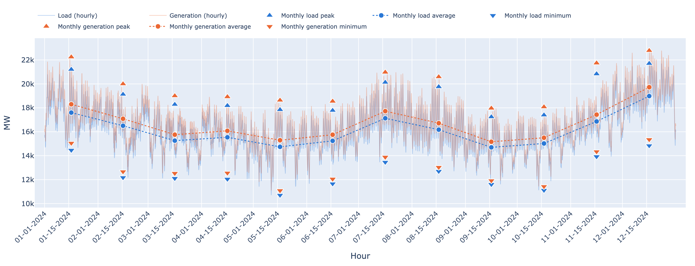
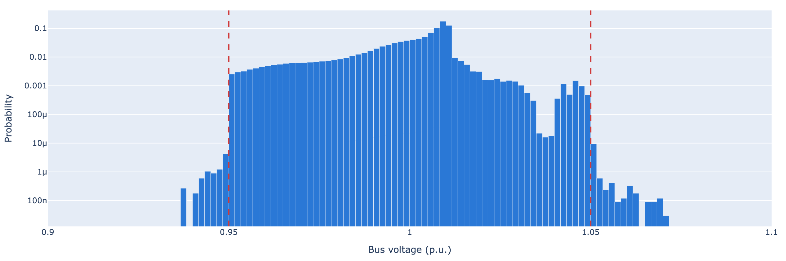
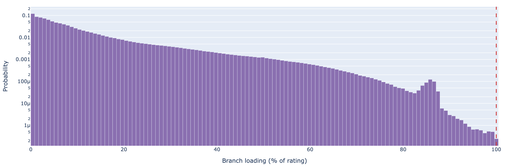

PNW Regional Model — Annual Baseline Results
2024-01-01 00:00 to 2024-12-31 23:00 (8,784 hours analyzed)
What this regional grid model and a full year of hourly AC power-flow results show.
What the system looks like
PNW-GRID is a geographically grounded synthetic transmission-system model of the Pacific Northwest, developed by the WSU–PNNL Advanced Grid Institute (AGI) as a common regional research platform for questions that cross utility and balancing-authority boundaries — complementing, not replacing, utility-specific planning and operating models.
The model covers 3,823 substations and 5,100 branches — a 69 kV-and-above transmission footprint spanning Washington, Oregon, Idaho, and portions of Montana. 437 of those substations generate at some point in the underlying data, with a combined 43,819 MW of summed peak capacity across them — that's each substation's own individual peak, not a single coincident system peak, since different generators peak at different hours.
Fourteen balancing authorities are represented in this footprint — Puget Sound Energy (PSEI), Chelan County PUD (CHPD), Douglas County PUD (DOPD), Grant County PUD (GCPD), Seattle City Light (SCL), Tacoma Power (TPWR), Avista (AVA), PacifiCorp West (PACW), Bonneville Power Administration (BPAT), Portland General Electric (PGE), Idaho Power Company (IPCO), PacifiCorp East (PACE), Avangrid Renewables (AVRN), and Gridforce Energy Management (GRID) — interfacing with 6 neighboring BAs beyond the footprint.
The network is assembled entirely from public data: transmission lines and substations from the Homeland Infrastructure Foundation-Level Data (HIFLD) program, with geographic locations and connectivity reconciled using OpenStreetMap; electrical parameters and line ratings estimated using IEEE Std. 399-1997; generation plant locations, capacities, and fuel types compiled from U.S. EIA records with hourly generation approximated using technology-specific capacity-factor profiles; and demand profiles built from NREL ResStock and dsgrid datasets, scaled to state-level EIA consumption and allocated to substations using U.S. Census Bureau population and housing data.
The map below is the same live figure as the Network Map tab -- voltage tiers, generator/load bubbles, county and Balancing Authority overlays -- shown here as a reference snapshot before the analysis below.

Annual load & generation
Every one of the 8,784 hours is a full nonlinear AC solve (pandapower's Newton-Raphson power flow, not a DC approximation). All 8,784 of 8,784 hours converged.
System load ranged from 10,704 MW to 21,702 MW, averaging 16,150 MW — a load factor of 74% (average ÷ peak). The seasonal shape is clear: load is highest in winter (December–January) and lowest in spring (April–May), with generation tracking load closely all year to cover losses.

Voltage & loading distribution
Every bus's voltage and every branch's loading, across every hour of the year — not just each hour's worst case. The vast majority of readings sit in a narrow band around normal operation; the tails beyond each limit are real but rare, as the log-scale probability axis below makes visible.


Summary of results
- Voltage: 58 of 8,784 hours (0.7%) had at least one bus outside the [0.95, 1.05] p.u. band. 7 of 3,823 buses were ever involved; 0 were out of range in every single hour. The single lowest voltage of the year was 0.937 p.u., at 2024-12-18 13:00; the highest was 1.070 p.u., at 2024-01-16 14:00. The busiest hour — the most buses violated at once — was 2024-01-12 12:00, with 4 buses outside limits simultaneously.
- Thermal loading: 6 of 8,784 hours (0.07%) had at least one branch over its rating — a rare, marginal event (worst case 100.5% of rating, at 2024-01-19 16:00), not a systemic thermal constraint. 2 of 5,100 branches were ever overloaded; 0 every single hour.
- Most persistently stressed: bus HAUSEN CREEK, pinned between 0.950 and 1.070 p.u. for 41 of 8,784 hours; branch TOLT → TAP209799 (115 kV), reaching 100% of rating in 2 hours.
Branch thermal ratings are a reproduced voltage-class heuristic in these figures, not a measured nameplate limit, so the loading percentages above are a screening signal, not a certified violation.